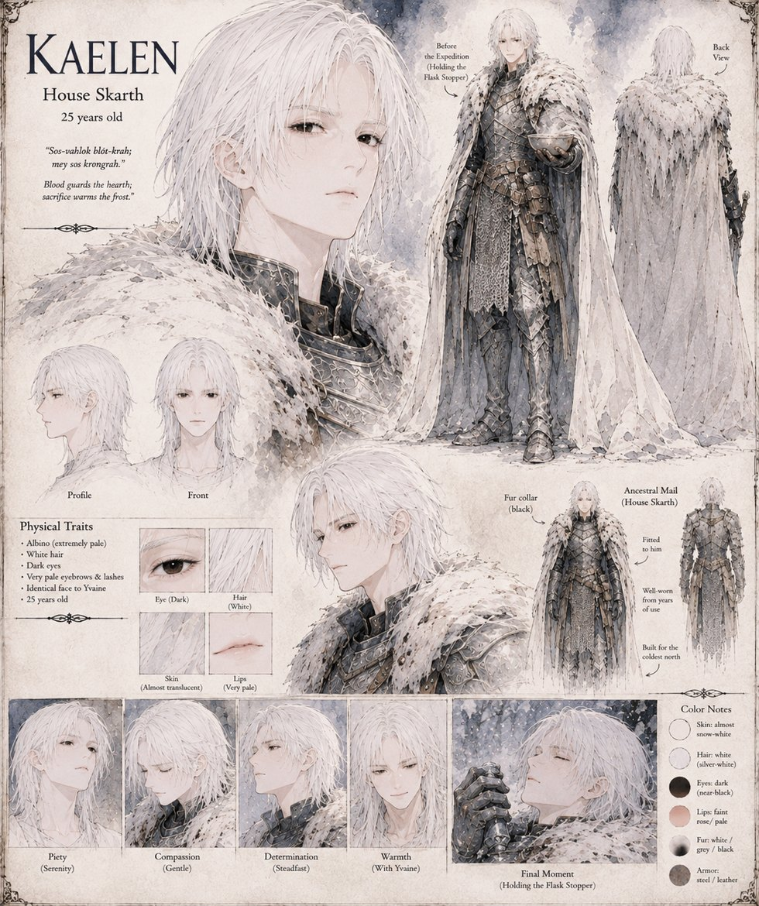

Kaelen
Baron of House Skarth · 25 years old · twin brother to Yvaine
Baron of House Skarth and Yvaine's twin, and the book's clearest case of faith with no category for suspicion. Guest-right, in House Skarth's law, means a guest fed at your table is simply fed — no debt, no price — and he treats a royal hunting party exactly that way: accepting Duke Maros's invitation before the messenger has finished reciting it, taking Duke Vane's offer to pay for provisions as the nearest thing to a genuine offense anyone has given him since leaving home, and quietly working a spare pair of dry socks free from his own baggage for a conscript whose boots have failed. He carries the household's steel flask two hundred miles north and holds it in reserve for the one night someone's need outruns the fires. When he finally unscrews the stopper for the King, Sir Corvus kills him where he stands — flask in one hand, stopper in the other, before the cup has reached the King. His name outlives every other name attached to the war.
“Sos-vahlok blót-krah; mey sos krongrah — blood guards the hearth; sacrifice warms the frost.”
Appears in The Thermal Vessel War